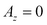
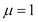
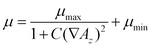
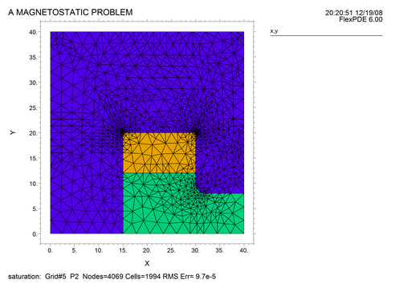
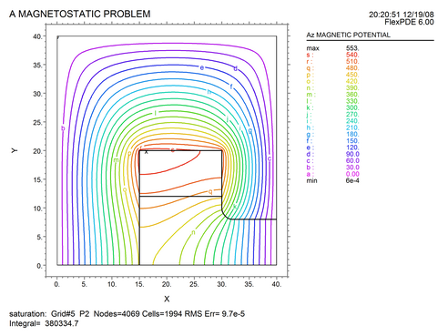
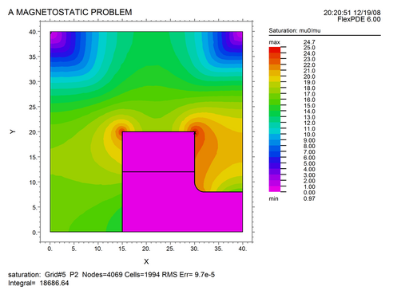

|
Nonlinear Permeability in 2D |

  
|
|
Nonlinear Permeability in 2D |
|
In the following 2D Cartesian example, a current-carrying copper coil is surrounded by a ferromagnetic core with an air gap. Current flows in the coil in the Z direction (out of the computation plane), and only the Z component of the magnetic vector potential is nonzero. The Coulomb gauge condition is again satisfied automatically. We assume a symmetry plane along the X-axis, and impose  along the remaining sides. The relative permeability is  in the air and the coil, while in the core it is given by
 ,
with parameters giving a behavior similar to transformer steel.
See also "Samples | Applications | Magnetism | Saturation.pde"
Descriptor 2.2: Saturation.pde
Title "A MAGNETOSTATIC PROBLEM"
Select
errlim = 1e-4
Variables
A
Definitions
mu = 1 { default to air}
mu0 = 1 { for saturation plot }
mu_max = 5000
mu_min = 200
mucore = mu_max/(1+0.05*grad(A)^2) + mu_min
S = 0
current = 2
y0 = 8
Equations
curl(curl(A)/mu) = S
Boundaries
Region 1 { The IRON core }
mu = mucore
mu0 = mu_max
start(0,0)
natural(A) = 0 line to (40,0)
value(A) = 0 line to (40,40) to (0,40) to close
Region 2 { The AIR gap }
mu = 1
start (15,0)
line to (40,0) to (40,y0) to (32,y0)
arc (center=32,y0+2) to (30,y0+2)
line to (30,20) to (15,20) to close
Region 3 { The COIL }
S = current
mu = 1
start (15,12)
line to (30,12) to (30,20) to (15,20) to close
Monitors
contour(A)
Plots
grid(x,y)
vector(dy(A),-dx(A)) as "FLUX DENSITY B"
vector(dy(A)/mu, -dx(A)/mu) as "MAGNETIC FIELD H"
contour(A) as "Az MAGNETIC POTENTIAL"
surface(A) as "Az MAGNETIC POTENTIAL"
contour(mu0/mu) painted as "Saturation: mu0/mu"
End


